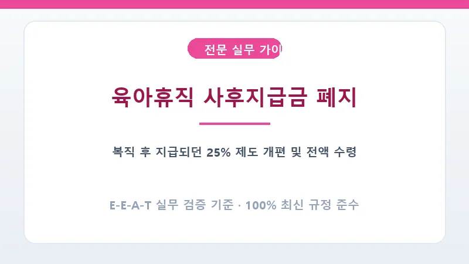

과거에는 휴직 중 매월 급여의 75%만 주고 나머지 25%는 복직 후 6개월 이상 계속 근무해야만 주던 사후지급금 제도가 운영되었습니다. 이는 자진퇴사자의 생계를 위협한다는 지적에 따라 법 개정을 통해 완전히 폐지되고 휴직 기간 중 100% 즉시 지급으로 전환되었습니다.
과거 제도를 적용받았던 이전 대상자라도 사업장 폐업, 임금체불 등 비자발적 사유로 6개월을 채우지 못하고 퇴사한 경우에는 고용센터 확인을 거쳐 미지급 사후지급금을 전액 돌려받을 수 있습니다.
A. 아닙니다. 이미 지급받은 육아휴직 급여는 퇴사하더라도 환수되지 않으며, 퇴사한 날 이후의 급여만 중단됩니다.
A. 남녀고용평등법상 휴직 개시 예정일 30일 전까지 사업주에게 신청서를 제출해야 합니다.